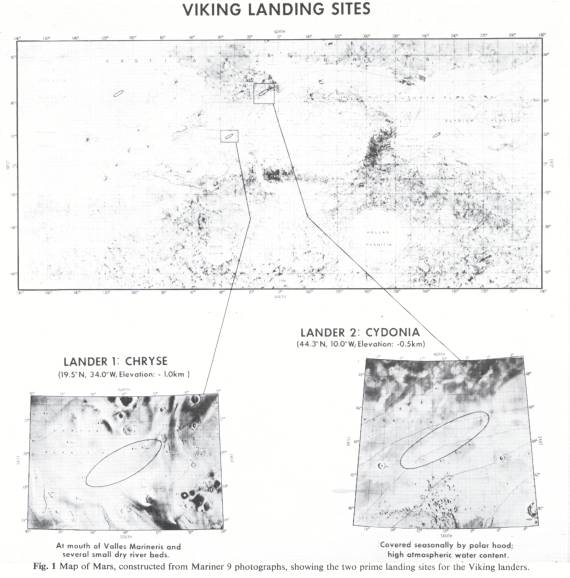
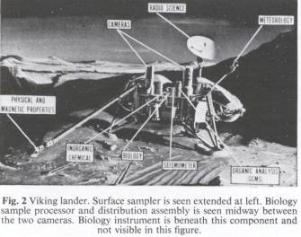
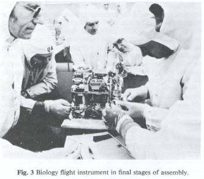

The
Viking Mission Search For Life On Mars
Harold P. Klein
NASA—Ames Research Center, Mountain View, California
Joshua Lederberg
Stanford University, Stanford, California
Alexander Rich
Massachusetts Institute of Technology, Cambridge, Massachusetts
Norman H. Horowitz
California Institute of Technology, Pasadena, California
Vance I. Oyama
NASA—Ames Research Center, Mountain View, California
Gilbert V. Levin
Biospherics Incorporated, Rockville. Maryland
On each of two unmanned
Viking spacecraft, a number of investigations are planned to be conducted on
the surface of Mars this summer. Included in the science payload are
instruments designed to determine the state of chemical evolution, including
the possible presence of living organisms, on that planet.
On July 4, 1976, the first of a pair of unmanned spacecraft is scheduled to touch down on the planet Mars in an area located at 19.5°N and 34°W, in a region of low elevation, which seems to be a drainage basin for a large portion of the equatorial region of Mars (Fig. 1). Two months later, the second Viking spacecraft should touch down further north (44.3ºN and 10°W) in another region of low elevation, relatively close to the edge of the northern winter ice cap, and at a latitude where maximum quantities of water vapour have been measured in the Martian atmosphere1.
Aboard both of these landers will be identical science ‘payloads’, including cameras, meteorological and seismic stations, and analytical equipment to conduct analyses of the surface material. These investigations are now planned to be conducted over a period of two months on each lander, but it is possible that the experiments will continue over considerably extended periods of time—approaching a full Martian year—if further funding can be made available for an extended Viking mission. The scientific objectives of this mission are manifold, but, among these, an assessment of the organic evolutionary state of the planet including a search for extraterrestrial life, is of paramount importance. For the first time, another planet is to be probed directly for evidence supportive of modern ideas on the origin of life2. Mars, although not a hospitable planet as judged by terrestrial standards3, is the one planet, other than Earth, that most nearly satisfies our theoretical presumptions of the conditions for life to have evolved4.

For many years, telescopic evidence of morphological features, and their temporal changes, inspired speculative controversies about the presence of life on Mars. These older controversies no longer bear discussion in the light of the Mariner Mars-orbiter and fly-by missions (1964—71) which gave us a complete photographic mapping at resolutions of 1 km or better. It is now clear that water in a form available to living organisms is a likely limiting factor. The polar caps seems to contain substantial quantities of ice, hut at temperatures far below those that would support any active terrestrial life. The temperate latitudes have congenial daytime temperatures, but humidities far below those known for any earthly desert. A number of mechanisms have, however, been proposed for possible local anomalies that could furnish moisture at temperatures consistent with metabolism5. In addition, the Mariner photographs show many surface features that are most easily explained by assuming that episodes of weather, precipitation and the carving of river valleys have occurred in the geological history of Mars.
These considerations have been taken into account, together with the engineering constraints, in planning the selection of landing sites. However, until our first successful landing, we have no reliable empirical basis for predictions about the local habitats of Mars. We have then been obliged to try to outguess Nature over a range of possible realities in planning these experiments.
Scientific payloads of Viking
mission
While all of the experiments are expected to contribute at least peripheral information pertaining to the local milieu of the landers (for example, local temperatures, wind speed and direction, atmospheric composition, elemental composition and magnetic properties of the surface material), three of the investigations hold the greatest promise for contributing directly to the question of organic chemical evolution on Mars.
The first of these is the imaging investigation, which will utilise two facsimile cameras, capable of stereoscopic imaging, on each lander. These cameras will scan the landing site area in black and white, colour and infrared, with a resolution of about 2 mm immediately below the landers. Examination of the surrounding terrain may reveal evidence of past or present living systems. Furthermore, frequent scans of this area may show signs (for example, colour changes) suggestive of living processes6.
Also on board each Viking lander is an instrument that will perform organic analyses of the Martian surface material. This is essential not only for obtaining results which may be relevant to Martian life, but also may provide valuable information in assessing the state of molecular complexity if the planet is in a prebiotic state of evolution. The heart of this instrumentation is a mass spectrometer, chosen because of its high sensitivity, wide dynamic range, and broad applicability. For the analyses, samples will be heated in ovens at 200 °C and at 500 °C. and the evolved organic vapour (if any) will first pass through a chromatographic column for separation. A complete gas chromatogram takes 84 min and, during this period, the mass spectrometer will record a complete mass spectrum from mass 12 to mass 200 every 10.3 s (ref. 7).
The biological payload supports three separate experiments which are based on different assumptions about the nature of a possible Martian biology. In the face of our relative ignorance of the local environmental conditions on Mars—for example, up to the present, there is no positive indication that nitrogen is present on Mars8—there is ample reason to approach the question of life detection on Mars with a broad approach. The combination of biological experiments on Viking is thus designed to create a diverse set of environments within which to elicit evidence of metabolism. Three kinds of metabolic question will be asked. Is there evidence for building up of molecules containing carbon starting with 14CO or 14CO2? Can small radioactive organic molecules be broken down to 14CO2? Are gases other than CO2 produced or consumed? These broad experiments try to measure anabolic and catabolic reactions on Mars. The conditions vary from dry to wet; include the presence of simple and complex nutrient sources, as well as the absence of added nutrients; and include incubation in the light or dark.
For the biological experiments samples will be analysed several times during each mission. They will be obtained from the upper 4 cm of surface material and will be incubated for different periods of time in each experiment. Incubation temperatures are expected to run at 15±10 °C. Furthermore, each of the experiments is provided with the capability to perform a control experiment with samples preheated to 160 °C for 3 h, in the event that any of the experiments gives a presumptive positive result.
Surface samples (approximately 6 cm3) will be delivered into the biology instrument by an extendable boom at the end of which a jaw-like scoop digs into the surface to acquire samples (Fig. 2).

The biology instrument contains four modules, one for each of the three experiments, as well as a common services module, which contains a helium source used to raise and lower the incubation cells, purge incubation chambers, and for other operations as well as a system of vents for gases and for liquid wastes. A detailed description9 of the instrument is beyond the scope of this communication, but a brief account follows.
The pyrolytic release (or carbon assimilation) experiment is designed to measure either photosynthetic or dark fixation of CO2 or CO into organic compounds10,11. Both of these gases are known to be present in the atmosphere of Mars, and the experiment is designed to simulate, as closely as conditions permit, the actual Martian environment. The experiment hardware includes a xenon arc lamp with a spectral range and distribution quite similar to the solar spectrum, and with an intensity of about 20% of the maximum Martian solar irradiation at the surface. The light source is provided with a filter to remove ultraviolet radiation below 340 nm to prevent the non-biological fixation of carbon monoxide into organic compounds, as has been reported by Hubbard et al.12,13. For this experiment, 20 μCi of a mixture of 14CO2 and 14CO (in a ratio of approximately 95 : 5) is injected into the headspace (containing Mars atmosphere) above a 0.25-cm3 surface sample that has been sealed off in one of the three incubation chambers provided. Incubation proceeds for the next five days in the light. While the incubation is proceeding, a long background count is taken. Following this period, the original incubation atmosphere is automatically vented, and the sample is pyrolysed by heating to 625 ºC. During this stage of the experiment sequence, any residual initial radioactive CO or CO2 will be driven out of the sample, through a column, the organic vapour trap (OVT), and into a 14C detector, while organic fragments will be adsorbed on the OVT. After counting at this point in the sequence, the radioactive gases in the detector are automatically vented, and the detector is then heated to remove adsorbed gases. Following this step, and several additional helium purges of the OVT and the detector, the organic matter that had been trapped on the OVT is now eluted by heating it to 650 °C for 3 min. During this heating, any trapped organics are released from the column and are simultaneously oxidised to CO2 by copper oxide present in the packing of the OVT. The effluent from this procedure is purged into the detector and counted. A radioactive peak at this time would constitute presumptive evidence for biological activity, to be followed by a control experiment using heat-sterilised soil.
In addition to the sequence just described, the experiment can be modified by the introduction of water vapour into the incubation atmosphere by commands from Earth. Another commandable option in this experiment is to turn off the lamp to conduct a dark incubation.
The labelled release experiment14 will test for metabolic activity during incubation of a surface sample that has been moistened with a solution of 14C-labelled simple organic compounds, consisting of a mixture of one-, two-, and three-carbon compounds, all uniformly labelled and in dilute aqueous solution. For this experiment, one of the four incubation cells provided in this module will receive 0.5 cm3 of surface material, and will be sealed with Martian atmosphere trapped in the headspace above the sample. Following this, a background count, lasting approximately 24 h, is taken, after which 0.115 cm3 of nutrient is automatically injected onto the sample. Incubation proceeds for the ensuing 8 d. A second injection of labelled nutrient then occurs, and incubation continues for 2 d. During the entire time, the atmosphere above the sample is monitored by a 14C detector to determine the kinetics of released labelled gas following each injection. Incubation is ended by a termination sequence to bring the background count down to pre-incubation levels. Following this ‘clean-up’ operation, the experiment is ready for another analysis cycle.
The gas exchange experiment15 will be conducted in two different modes using the same equipment. In one mode (the ‘humid’ mode), Martian surface samples will be incubated in the presence of CO2 and water vapour. This mode is based on the assumption that substrates may not be limiting on Mars, but that biological activity is dormant in these samples until enough water becomes available in the environment. The second mode (the ‘heterotrophic’ mode) assumes the presence of frankly heterotrophic organisms in the Martian surface.
For both of these experimental modes, it is further assumed that metabolism of active organisms in the samples will cause the disappearance or release of one or more gases known to be involved in terrestrial metabolic processes. For an analysis, 1 cm3 of sample is delivered into the single incubation cell. A mixture of CO2 and Kr (in He) is then added to serve as the incubation atmosphere. After this step, 0.5 cm3 of nutrient is delivered to the bottom of the incubation cell. During incubation, the sample is retained in an inner-cup within the incubation cell so that the nutrient does not come into direct contact with the sample. The inner cup is porous and allows equilibration between the sample and the incubation atmosphere. Gas samples (100 ul) are taken from the headspace above the sample immediately after the nutrient has been injected and at specified times thereafter for the next 7 d. The gas samples are swept through a chromatographic column and the components detected by a thermal conductivity detector. If no command to the contrary is given after 7 d in the ‘humid’ mode, the instrument will automatically inject additional nutrient bringing the total aqueous volume now to 2.5 cm3. With this amount of nutrient, the sample will be wet by the nutrient and incubation now will proceed in the ‘heterotrophic’ mode. (The nutrient solution contains both D- and L-amino acids as well as other organic substrates, growth factors and inorganic compounds.) Incubation continues in this mode with gas samplings at stipulated intervals for the next 9 d. At this point, options exist to proceed in various directions, depending on the data obtained. One is to drain the nutrient from the bottom of the cell and to introduce fresh atmosphere and fresh nutrient, and to incubate the original sample for an additional 19 d. Or, the initial incubation conditions can simply be extended for an additional 19-d period (that is, without draining the original nutrient or changing the gas atmosphere). If circumstances warrant it, the nutrient can be drained, the original sample dried, and a new sample introduced on top of the first one for a second analysis in the ‘heterotrophic’ mode.
In addition to the 14C data from the two radioactivity detectors, and the gas chromatographic data, several other measurements will be telemetered periodically from the spacecraft during the course of these experiments. These include the status of the xenon lamp, the position of each incubation cell, temperature measurements of each incubation cell being used, and temperature measurements of both nuclear detectors, of the OVT and of the gas chromatographic column and detector. In addition, we will receive data on the pressure of the critical helium reservoir in the common services module.
Figure 3 shows one of the flight instruments in its final stages of assembly. It contains, in addition to the incubation cells and sample distribution system, four different gas supplies, two different nutrients, two 14C detectors, a thermal conductivity detector and chromatographic system, 43 different heaters, 4 thermoelectric coolers, 39 miniature latching solenoid valves, a xenon arc lamp, 22,000 transitors, and 18,000 other electronic parts. All of this is packaged into a volume somewhat greater than 1 foot3, and weighs 35 pounds.

The three biology experiments differ in their sensitivity, as measured by their responses to terrestrial organisms. Both the gas exchange and labelled release experiments have, by now, been tested against a wide variety of soils and they readily “detect” the presence of microbial flora in these samples when they are incubated in ambient terrestrial conditions. When these soil samples are incubated under the conditions in which the experiments will be operated on Mars, the responses are delayed by prolonged lag periods, but qualitatively similar responses are seen. In contrast, the pyrolytic release experiment does not respond to terrestrial soils at all when incubated in “Martian” conditions. Only when water is included in the incubation test cell is terrestrial biological activity demonstrable in this experiment. Accordingly, during the long test programme that preceded the manufacture of the flight instruments, several ‘standard’ soils were used to challenge the two ‘wet’ experiments. For thee pyrolytic release experiment, soil was preincubated in the light in the presence of water to provide fixed radioactive carbon compounds, dried, and then used in this form to test the equipment. Since the final flight hardware is designed to work on Mars, and not on Earth, and because the design of the biology package precludes repetitive incubations (beyond four per experiment), and because of the rigid requirements to prevent terrestrial contamination, the flight instruments were not, and could not be, tested with terrestrial soils. Precursor instruments, built to flight specifications (with minor exceptions), did go through at least one prolonged test in simulated Martian conditions using one of our ‘standard’ soils, (containing 1 x 106 aerobic, and 5 x 104 anaerobic organisms per g; with a pH of 4.8 and an organic content of 0.8%). In addition, a flight-like instrument was installed on a lander and tested as part of a complete system, but these tests did not include analysis of any soils. Rather, known mixtures of gases were processed through the gas exchange hardware, and 14CO2 was used to challenge the other two experiments. These tests16, while not completely satisfying, in that only a part of the complete system was tested, gave results entirely consistent with extensive prior testing at the module level. Finally, at the component level (that is, detectors, chromatograph columns, and so on), many of the actual flight components were extensively tested for their scientific as well as their engineering characteristics. In these tests, no significant anomalies were uncovered. In summary, the testing programme was less than optimal, being limited by time and fiscal constraints, but met the minimum standards for confidence that the instruments will perform their nominal functions after landing on Mars.
The team of scientists selected by NASA, in 1969, to plan and conduct the biological investigation on the Viking spacecraft consisted of the authors and the late Dr Wolf Vishniac (University of Rochester, Rochester, New York). The following individuals are collaborators in these investigations: Bonnie Berdahl, Glenn Carle and Richard D. Johnson (NASA, Ames Research Center, Mountain View, California); George Hobby (California Institute of Technology, Pasadena, California); Jerry Hubbard (Georgia Institute of Technology, Atlanta, Georgia); and Patricia Straat (Biospherics Incorporated, Rockville, Maryland).
1 Farmer, C. B.. and LaPorte, D. D., Icarus, 16, 34 (1972).
2 Horowitz, N. H., and Hubbard, J. S., Ann. Rev. Genet., 8, 393 (1974).
3 Glasstone, S., The Book of Mars, NASA SP-179 (1968).
4 Horowitz, N. H., Acc. chem. Res., 9, 1 (1976).
5. Sagan, C., and Lederberg, J.. Icarus (in the press).
6 Mutch, T. A., et al., Icarus, 16, 92 (1972).
7 Anderson, D. M., et al., Icarus, 16, 111 (1972).
8 Barth, C. A., Ann. Rev. Earth planet. Sci., 2, 333 (1974).
9 Report No. 21020-6003-RU-00, August 1975 (TRW Systems Group, Redondo Beach, California 90278).
10 Hubbard, J. S., Hobby, G. L., Horowitz, N. H., Geiger, P. J., and Morelli, F. A., Appl. Microbiol., 19, 32 (1970).
11 Horowitz, N. H., Hubbard, J. S., and Hobby, G. L., Icarus, 16, 147 (1972).
12 Hubbard, J. S., Hardy, J. P., and Horowitz, N. H., Proc. natn. Acad. Sci. U.S.A., 68, 574 (1971).
13 Hubbard, J. S., Hardy, J. P., Voecks, G. E., and Golub. E. E., J. molec. Evol., 2, 149 (1973).
14 Levin, G. V., Icarus, 16, 153 (1972).
15 Oyama, V. I., Icarus, 16, 167 (1972).
16 Reports Nos MMK 1124 and MMC 1141 (TRW Systems Group, Redondo Beach, California 90278).
<< Back to Mars Research Main